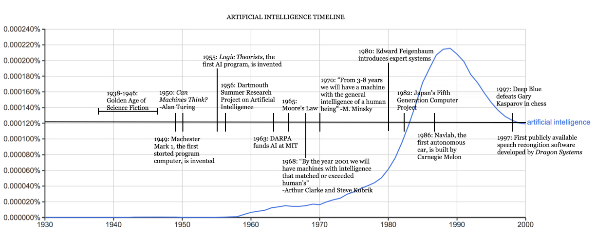

Chapter 1: Introduction to AI
This chapter introduces the basics of AI, including its history, and future potential.
This chapter introduces the basics of AI, including its history, and future potential.
Artificial intelligence (AI) is technology that enables computers and machines to simulate human learning, comprehension, problem solving, decision making, creativity and autonomy.
Applications and devices equipped with AI can see and identify objects. They can understand and respond to human language. They can learn from new information and experience. They can make detailed recommendations to users and experts. They can act independently, replacing the need for human intelligence or intervention (a classic example being a self-driving car). But in 2024, most AI researchers and practitioners—and most AI-related headlines—are focused on breakthroughs in generative AI (gen AI), a technology that can create original text, images, video and other content. To fully understand generative AI, it’s important to first understand the technologies on which generative AI tools are built: machine learning (ML) and deep learning.
by Rockwell Anyoha Can Machines Think? In the first half of the 20th century, science fiction familiarized the world with the concept of artificially intelligent robots. It began with the “heartless” Tin man from the Wizard of Oz and continued with the humanoid robot that impersonated Maria in Metropolis. By the 1950s, we had a generation of scientists, mathematicians, and philosophers with the concept of artificial intelligence (or AI) culturally assimilated in their minds. One such person was Alan Turing, a young British polymath who explored the mathematical possibility of artificial intelligence. Turing suggested that humans use available information as well as reason in order to solve problems and make decisions, so why can’t machines do the same thing? This was the logical framework of his 1950 paper, Computing Machinery and Intelligence in which he discussed how to build intelligent machines and how to test their intelligence.
Unfortunately, talk is cheap. What stopped Turing from getting to work right then and there? First, computers needed to fundamentally change. Before 1949 computers lacked a key prerequisite for intelligence: they couldn’t store commands, only execute them. In other words, computers could be told what to do but couldn’t remember what they did. Second, computing was extremely expensive. In the early 1950s, the cost of leasing a computer ran up to $200,000 a month. Only prestigious universities and big technology companies could afford to dillydally in these uncharted waters. A proof of concept as well as advocacy from high profile people were needed to persuade funding sources that machine intelligence was worth pursuing.
Five years later, the proof of concept was initialized through Allen Newell, Cliff Shaw, and Herbert Simon’s, Logic Theorist. The Logic Theorist was a program designed to mimic the problem solving skills of a human and was funded by Research and Development (RAND) Corporation. It’s considered by many to be the first artificial intelligence program and was presented at the Dartmouth Summer Research Project on Artificial Intelligence (DSRPAI) hosted by John McCarthy and Marvin Minsky in 1956. In this historic conference, McCarthy, imagining a great collaborative effort, brought together top researchers from various fields for an open ended discussion on artificial intelligence, the term which he coined at the very event. Sadly, the conference fell short of McCarthy’s expectations; people came and went as they pleased, and there was failure to agree on standard methods for the field. Despite this, everyone whole-heartedly aligned with the sentiment that AI was achievable. The significance of this event cannot be undermined as it catalyzed the next twenty years of AI research.
From 1957 to 1974, AI flourished. Computers could store more information and became faster, cheaper, and more accessible. Machine learning algorithms also improved and people got better at knowing which algorithm to apply to their problem. Early demonstrations such as Newell and Simon’s General Problem Solver and Joseph Weizenbaum’s ELIZA showed promise toward the goals of problem solving and the interpretation of spoken language respectively. These successes, as well as the advocacy of leading researchers (namely the attendees of the DSRPAI) convinced government agencies such as the Defense Advanced Research Projects Agency (DARPA) to fund AI research at several institutions. The government was particularly interested in a machine that could transcribe and translate spoken language as well as high throughput data processing. Optimism was high and expectations were even higher. In 1970 Marvin Minsky told Life Magazine, “from three to eight years we will have a machine with the general intelligence of an average human being.” However, while the basic proof of principle was there, there was still a long way to go before the end goals of natural language processing, abstract thinking, and self-recognition could be achieved.

Breaching the initial fog of AI revealed a mountain of obstacles. The biggest was the lack of computational power to do anything substantial: computers simply couldn’t store enough information or process it fast enough. In order to communicate, for example, one needs to know the meanings of many words and understand them in many combinations. Hans Moravec, a doctoral student of McCarthy at the time, stated that “computers were still millions of times too weak to exhibit intelligence.” As patience dwindled so did the funding, and research came to a slow roll for ten years.
In the 1980’s, AI was reignited by two sources: an expansion of the algorithmic toolkit, and a boost of funds. John Hopfield and David Rumelhart popularized “deep learning” techniques which allowed computers to learn using experience. On the other hand Edward Feigenbaum introduced expert systems which mimicked the decision making process of a human expert. The program would ask an expert in a field how to respond in a given situation, and once this was learned for virtually every situation, non-experts could receive advice from that program. Expert systems were widely used in industries. The Japanese government heavily funded expert systems and other AI related endeavors as part of their Fifth Generation Computer Project (FGCP). From 1982-1990, they invested $400 million dollars with the goals of revolutionizing computer processing, implementing logic programming, and improving artificial intelligence. Unfortunately, most of the ambitious goals were not met. However, it could be argued that the indirect effects of the FGCP inspired a talented young generation of engineers and scientists. Regardless, funding of the FGCP ceased, and AI fell out of the limelight.
Ironically, in the absence of government funding and public hype, AI thrived. During the 1990s and 2000s, many of the landmark goals of artificial intelligence had been achieved. In 1997, reigning world chess champion and grand master Gary Kasparov was defeated by IBM’s Deep Blue, a chess playing computer program. This highly publicized match was the first time a reigning world chess champion loss to a computer and served as a huge step towards an artificially intelligent decision making program. In the same year, speech recognition software, developed by Dragon Systems, was implemented on Windows. This was another great step forward but in the direction of the spoken language interpretation endeavor. It seemed that there wasn’t a problem machines couldn’t handle. Even human emotion was fair game as evidenced by Kismet, a robot developed by Cynthia Breazeal that could recognize and display emotions.
We haven’t gotten any smarter about how we are coding artificial intelligence, so what changed? It turns out, the fundamental limit of computer storage that was holding us back 30 years ago was no longer a problem. Moore’s Law, which estimates that the memory and speed of computers doubles every year, had finally caught up and in many cases, surpassed our needs. This is precisely how Deep Blue was able to defeat Gary Kasparov in 1997, and how Google’s Alpha Go was able to defeat Chinese Go champion, Ke Jie, only a few months ago. It offers a bit of an explanation to the roller coaster of AI research; we saturate the capabilities of AI to the level of our current computational power (computer storage and processing speed), and then wait for Moore’s Law to catch up again.
We now live in the age of “big data,” an age in which we have the capacity to collect huge sums of information too cumbersome for a person to process. The application of artificial intelligence in this regard has already been quite fruitful in several industries such as technology, banking, marketing, and entertainment. We’ve seen that even if algorithms don’t improve much, big data and massive computing simply allow artificial intelligence to learn through brute force. There may be evidence that Moore’s law is slowing down a tad, but the increase in data certainly hasn’t lost any momentum. Breakthroughs in computer science, mathematics, or neuroscience all serve as potential outs through the ceiling of Moore’s Law.
So what is in store for the future? In the immediate future, AI language is looking like the next big thing. In fact, it’s already underway. I can’t remember the last time I called a company and directly spoke with a human. These days, machines are even calling me! One could imagine interacting with an expert system in a fluid conversation, or having a conversation in two different languages being translated in real time. We can also expect to see driverless cars on the road in the next twenty years (and that is conservative). In the long term, the goal is general intelligence, that is a machine that surpasses human cognitive abilities in all tasks. This is along the lines of the sentient robot we are used to seeing in movies. To me, it seems inconceivable that this would be accomplished in the next 50 years. Even if the capability is there, the ethical questions would serve as a strong barrier against fruition. When that time comes (but better even before the time comes), we will need to have a serious conversation about machine policy and ethics (ironically both fundamentally human subjects), but for now, we’ll allow AI to steadily improve and run amok in society.